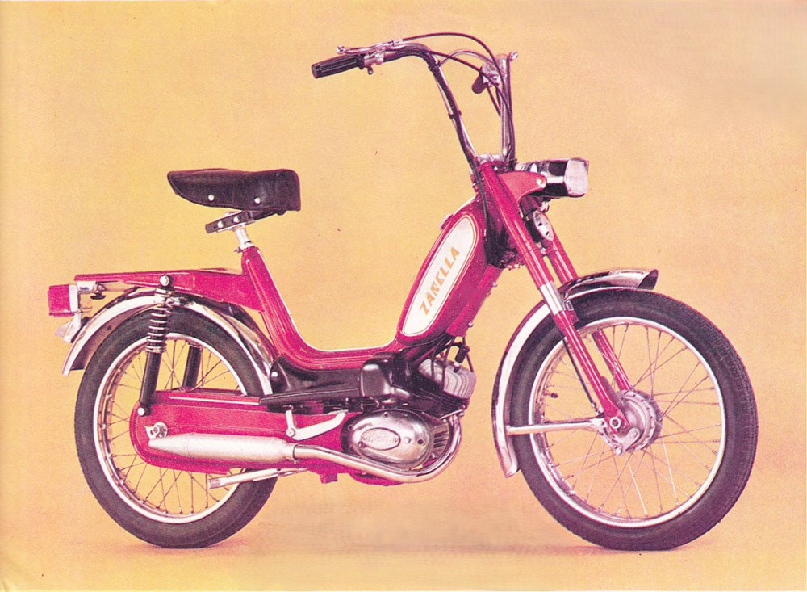

Zanella “T”
- Año: 1979
- Cilindrada: 48 cc
- Origen: Argentina
- Motor: 2T de 3 velocidades c/ 3 discos embrague
- H.P.: 2.3 H.P.
- Carburador: Dell Orto 12-14
- Velocidad: 60 km/h
- Color: Blanca
- Observaciones: Pinci / Quilmes / Piedra tiza / 5%
- Número de moto: 1